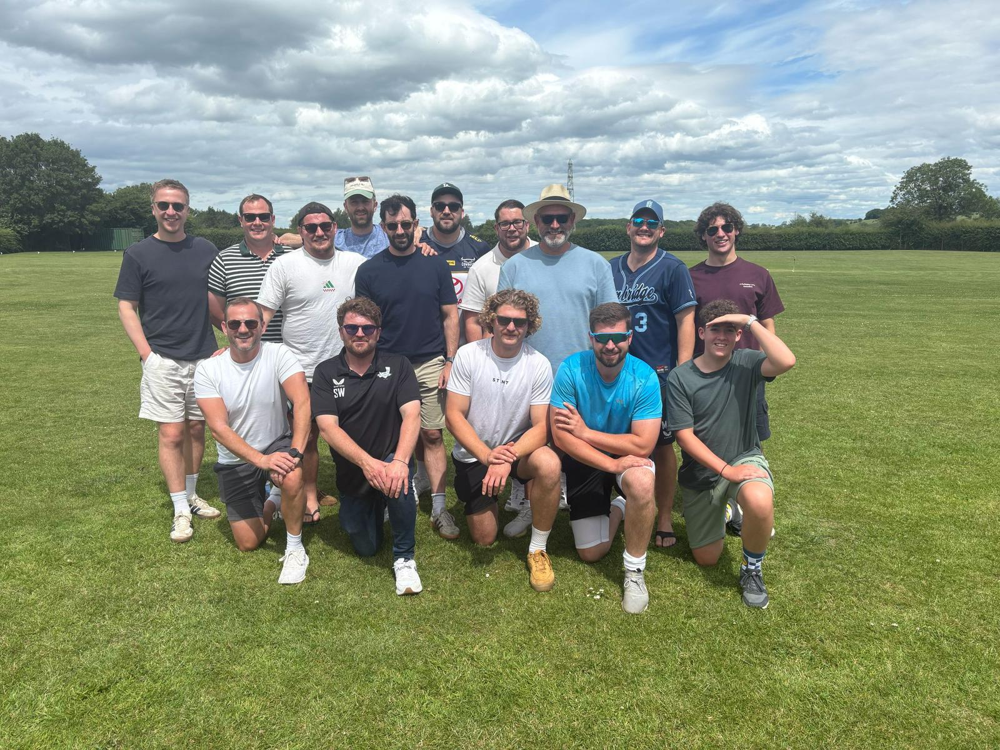
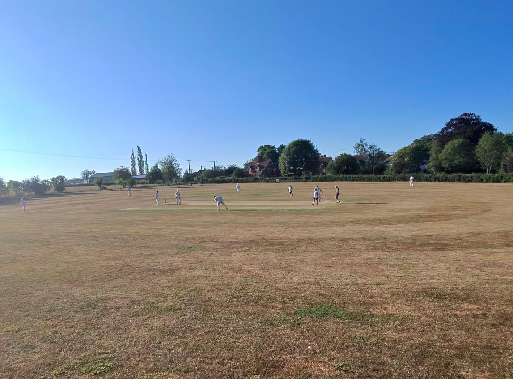
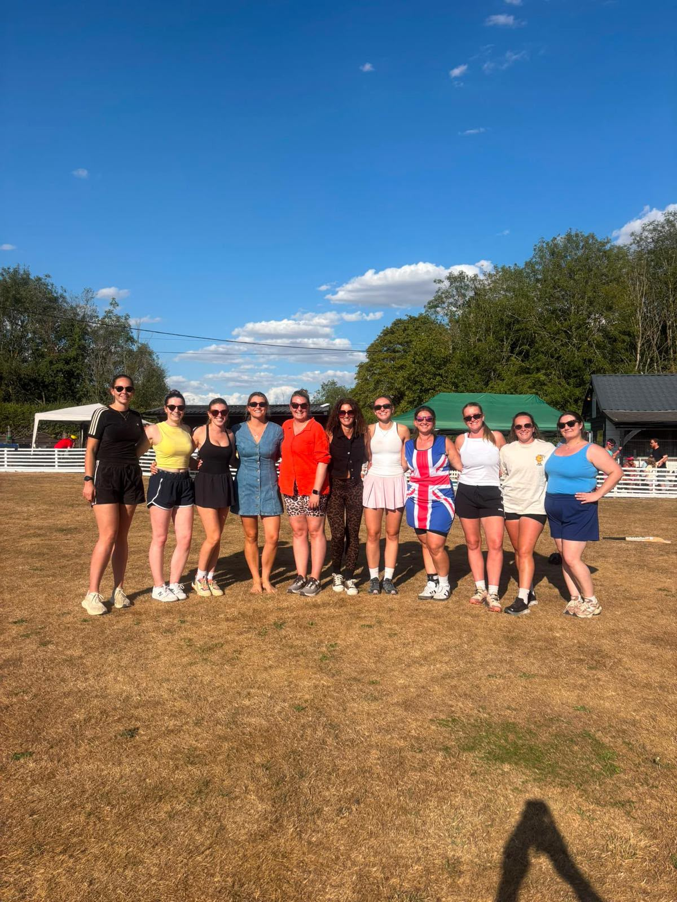
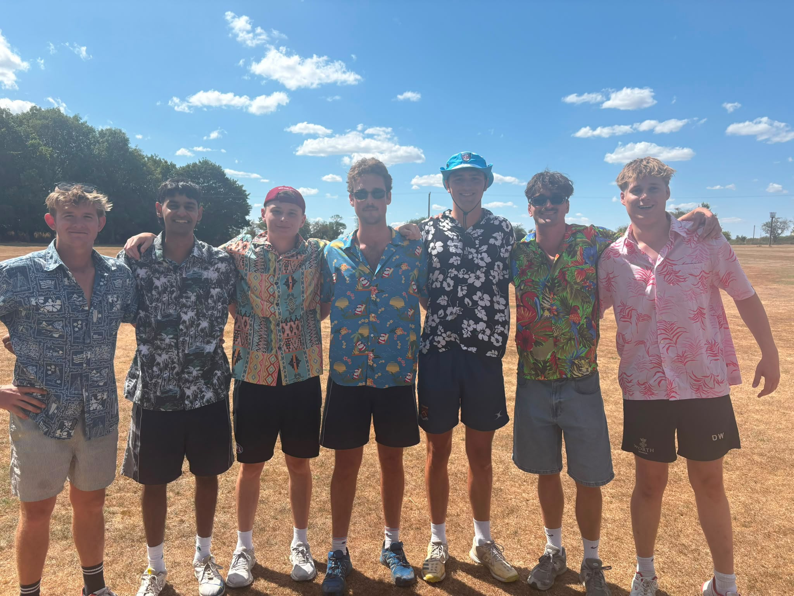
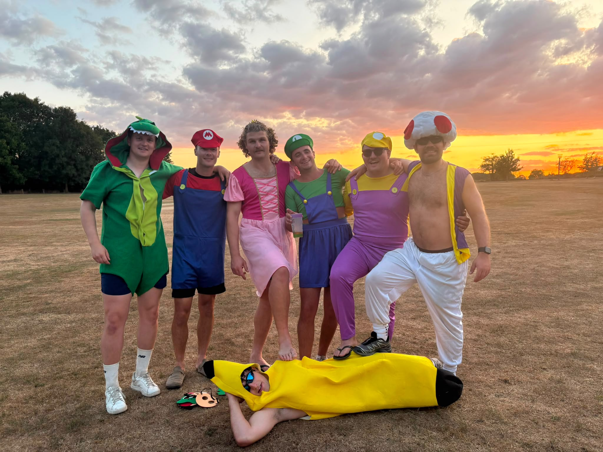
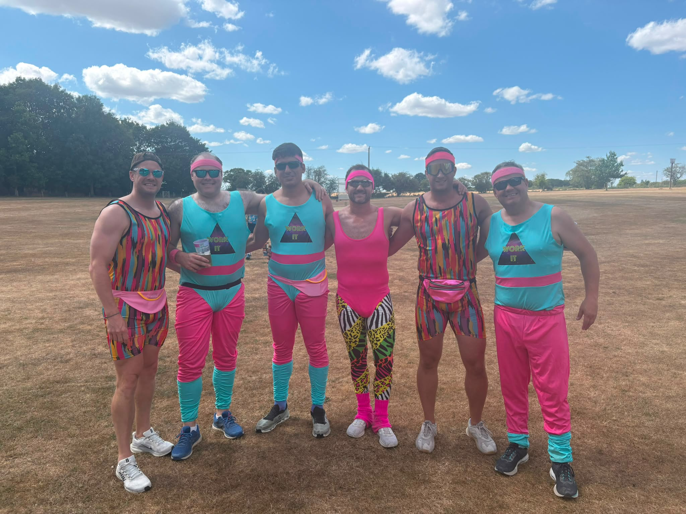

Next fixture
Friendly cricket in rural Essex — played hard, enjoyed together.
Next fixture and latest result are refreshed automatically from Play-Cricket, while live broadcasts are detected from the Lindsell scoreboard.
Lindsell CC is built around friendly cricket, social days, touring sides, club events and a welcoming village-ground atmosphere. Whether you're playing, watching or simply calling in, the club is about enjoying cricket together.

A snapshot of the ground, match days and the social side of the club.





The new website becomes the front door, while Play-Cricket and Square keep doing the jobs they already do well.